妝後保養分成兩大部分:
卸妝
- Step1.清潔雙手
- Step2.卸除彩妝較濃的部分
- Step3.掌握卸妝乳用法，卸除全臉彩妝
- Step4.大量溫水洗淨
保養
- Step1.檢查是否還有殘妝
- Step2.臉部補水
- Step3.塗抹眼周精華
- Step4.保濕
如果沒有將雙手洗乾淨就直接開始後續的卸妝程序，手上的髒污就容易引起肌膚問題，反而越卸越髒
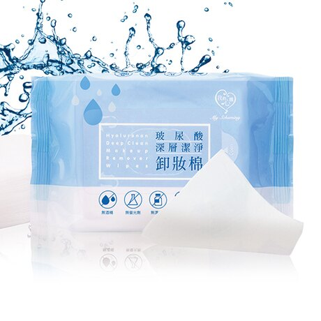 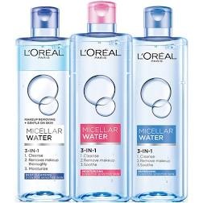 用眼唇卸妝液浸濕化妝棉後，覆蓋在眼部和唇部一段時間，由上往下卸掉
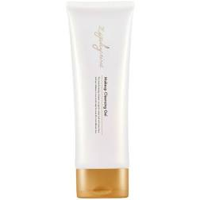 
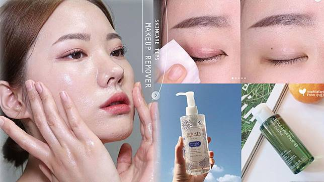 卸妝產品溶解彩妝後，如果沒有使用大量清水將髒污帶走，就會堆積在毛孔內引起痘痘或粉刺問題
用化妝棉沾取化妝水，輕輕擦拭全臉，檢查是否有殘妝的痕跡。
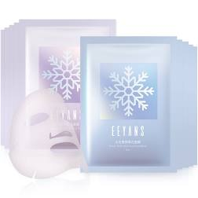 敷上面膜，舒緩毛孔和補充流失的水分。
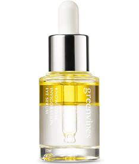 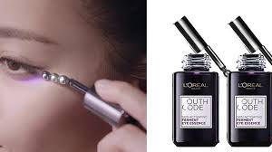 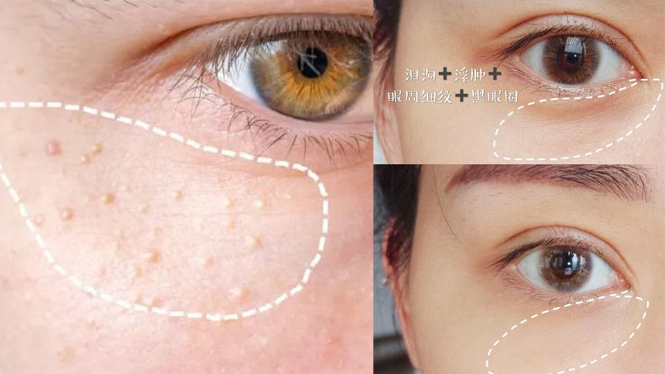 因眼周的肌膚較嬌嫩，化妝或洗臉都容易拉扯到周圍肌膚，因而產生皺紋
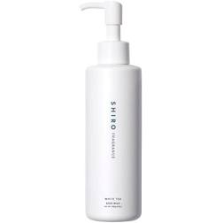 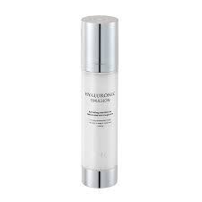 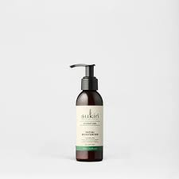 根據膚質選擇清透或滋潤的保濕產品，達到深層滋潤保濕的效果。
聯絡電話:0123456789 聯絡信箱:abcdef@gmail.com